Hello world!
I’m a web-developer who just graduated from my studies with the same title. I made a lot of backend
coding and enjoyed it but staying true to my heart I decided that I should go back to school to become
a multimediadesigner, because design, frontend and creativity is where my real passion lies.
My portfolio will contain some of my websites, but keep in mind I was at the time focused on the
backend part, so don’t judge my design skills just yet - I will keep updating my page further into
my studies. I’ve also put some original photos, edited in photoshop and a few drawings and labels
on my page, just for the funs!
Enjoy.


Hello world!
I’m a web-developer who just graduated from my studies with the same title. I made a lot of backend coding
and enjoyed it but staying true to my heart I decided that I should go back to school to become a multimediadesigner,
because design, frontend and creativity is where my real passion lies.
My portfolio will contain some of my websites, but keep in mind I was at the time focused on the backend
part, so don’t judge my design skills just yet - I will keep updating my page further into my studies.
I’ve also put some original photos, edited in photoshop and a few drawings and labels on my page, just
for the funs!
Enjoy.